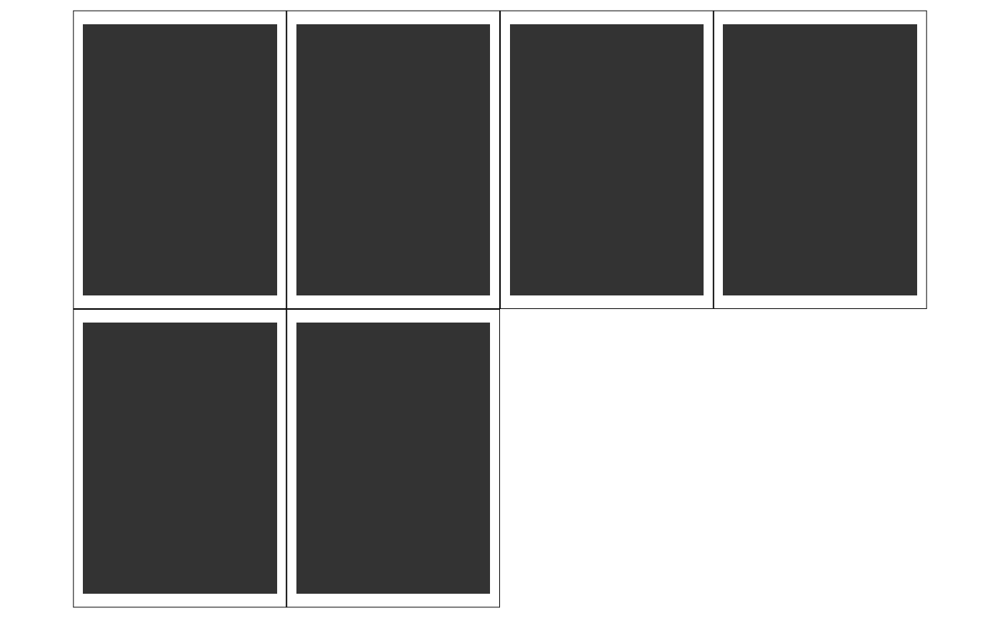

Use patchwork to lay out a list of fixed aspect plots on a larger page
Source:R/page_layout.R
page_layout.RdUse patchwork to lay out a list of fixed aspect plots on a larger page
Usage
page_layout(
plots = NULL,
page = NULL,
width = NULL,
height = NULL,
orientation = "landscape",
byrow = FALSE,
guides = NULL,
tag_level = NULL,
design = NULL,
paginate = TRUE,
ncol = NULL,
nrow = NULL,
dims = NULL,
images = FALSE,
dpi = 120,
call = caller_env()
)Arguments
- plots
Page name, a data.frame with width and height columns, or a list of ggplot2 objects with card plots. Default:
NULL- page
Paper name or a data.frame with width and height columns. Optional if width and height are both provided, Default:
NULL- width, height
Paper width and height, Default:
NULL- orientation
Paper orientation, Optional if width and height are both provided, Default: 'landscape'
- byrow
Analogous to
byrowin matrix(). IfFALSEthe plots will be filled in in column-major order- guides
A string specifying how guides should be treated in the layout.
'collect'will collect guides below to the given nesting level, removing duplicates.'keep'will stop collection at this level and let guides be placed alongside their plot.autowill allow guides to be collected if a upper level tries, but place them alongside the plot if not. If you modify default guide "position" with theme(legend.position=...) while also collecting guides you must apply that change to the overall patchwork (see example).- tag_level
A string (
'keep'or'new') to indicate how auto-tagging should behave. Seeplot_annotation().- design
Specification of the location of areas in the layout. Can either be specified as a text string or by concatenating calls to
area()together. See the examples for further information on use.- paginate
If
TRUE, create a list ofpatchworkobjects when the number of plots is greater than the number of spaces in the plot layout. Default toTRUE.- ncol, nrow
The dimensions of the grid to create. If both are
NULL, dims will be used or dims will be determined based on the plot dimensions.- dims
Optional. Plot dimensions. Ignored if ncol and nrow are supplied. Otherwise, if
NULL(default), dims are inferred based on the dimensions of the first plot in plots.- images
Not yet implemented. If
TRUEand dims isNULL, the input plots are assumed to be plots created withmagick::image_ggplot()and dpi is used to infer dimensions.- dpi
Not yet implemented. Resolution.
- call
The execution environment of a currently running function, e.g.
caller_env(). The function will be mentioned in error messages as the source of the error. See thecallargument ofabort()for more information.
Examples
page_layout(
plots = plot_cards("Poker", 6),
page = "letter"
)
#> ℹ Using `dims` from first plot in `plots`.
#> $`1`

#>